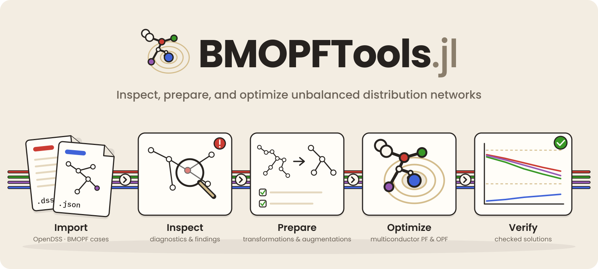
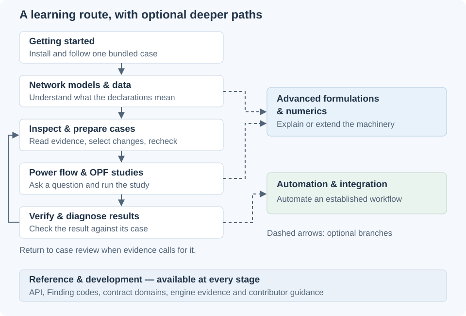

BMOPFTools.jl

Inspect, prepare, and optimize unbalanced distribution networks.
BMOPFTools connects network-data diagnostics, geospatial review, and multiconductor power-flow and optimal power flow (OPF) workflows in Julia. Import OpenDSS or BMOPF cases, inspect their assumptions, prepare study scenarios, and check compatible solver results. The package supports the IEEE PES Task Force on Benchmarking Multiconductor OPF for Distribution Systems; see the BMOPF specification for the mathematical and data model.
New here? Follow Installation & first steps, then First case: inspect, solve and verify. That walkthrough uses a bundled synthetic feeder and executes during the documentation build. You do not need an external dataset. If you already have a task in mind, use Choose your tutorial.
Find your route
The main learning route is understand → inspect and prepare → study → verify. Return to the case when the evidence calls for different data or assumptions. Advanced explanations and automation are branches you can take when your task needs them; they are not prerequisites for the first walkthrough.

| Section | What you will learn or do | Start with |
|---|---|---|
| Getting started | Install the package and complete one small workflow. | First case, Tutorial routes |
| Network models & data | Understand terminals, units, grounding, model choices, and conversion conventions. | Buses & terminals, Conversion guide |
| Inspect & prepare cases | Read the evidence, select justified changes, record assumptions, and recheck. Inspection and transformation are separate steps. | Analysis & reports, Spatial review, Case augmentation |
| Power flow & OPF studies | Choose a study question, solver and objective; compare operating scenarios and controls. | OPF guide, Case families |
| Verify & diagnose results | Check a returned solution against its case and investigate failures. | Trust but verify, Power-flow comparison, Infeasibility diagnosis |
| Advanced formulations & numerics | Understand encodings, numerical limitations, and formulation extension points. | Choose an advanced route, Model extensions, Scaling & diagnostics |
| Automation & integration | Run established checks through JSON recipes, MCP, or an AI-assisted workflow. | JSON execution, AI-assistant guide |
| Reference & development | Look up APIs, Finding codes and contract domains, inspect implementation evidence, or contribute. | API, Findings, Engine validation evidence, Developer guide |
Three different kinds of checking
- Model checks inspect input declarations, their consistency, and supported domains. Begin with Analysis & reports.
- Solution verification checks a returned result against the supplied case. Begin with Trust but verify.
- Engine validation evidence documents how the implementation is tested, including external comparisons and their limits. See Validating the OPF engine.
These answer different questions. Passing one does not substitute for the others.
Installation
BMOPFTools requires Julia ≥ 1.10. New to Julia? The Installation & first steps page covers installing Julia itself (via juliaup), what the julia> prompt is and where these commands go, and how to set up for the tutorials — start there. The package is not yet in the General registry, so install it from its Git URL at the julia> prompt:
using Pkg
Pkg.add(url = "https://github.com/frederikgeth/BMOPFTools.jl")Parsing, validation, analysis, reporting, OpenDSS ingestion (from_dss, via the PowerIO.jl dependency), and the to_pmd exporter work out of the box. One capability pulls in extra tooling, activated only when you load it:
OPF / power flow (
solve_opf,solve_pf,solve_feasibility_opf) lives in a package extension that is loaded once JuMP and a solver such as Ipopt are present in the environment:Pkg.add(["JuMP", "Ipopt"])
The package is under rapid development, with breaking changes landing directly on main. Pin a specific revision when you need reproducibility: Pkg.add(url = "https://github.com/frederikgeth/BMOPFTools.jl", rev = "<commit-sha>").
Quickstart
First case: inspect, solve and verify walks through loading the bundled four-wire feeder, reading its report, opening its BMOPF file in Tellegen, solving it with JuMP/Ipopt, and profiling the result. It produces downloadable case and report files as part of the docs build.
For a solver-free start, complete the inspection steps and stop before the solve. For browser-only exploration, use the downloadable example in Visualizing a case with Tellegen.
The pipeline
Once you can inspect and verify a small case, move to Developing OPF case families for scenario comparisons, or to Spatial diagnostics and the Tellegen review workflow for geographic and electrical model cleanup.
The utility-data end-to-end tutorial adds OpenDSS conversion, structural transformations, DER placement, and augmentation on a larger source case. It requires an external dataset with its own licence terms; its dataset examples are displayed as code and are not executed by the docs build. It is an optional continuation, not a prerequisite for the bundled walkthrough.
Design
The network data model is a plain Dict{String,Any} mirroring the BMOPF JSON structure exactly. There are deliberately no wrapper types: data flows to and from JSON (and out to PowerModelsDistribution via to_pmd) without conversion layers, and the only structs in the library are the outputs — Finding, SummaryReport, and SolutionReport — which need stable shape for rendering and programmatic use.
Ingestion follows from this. from_dss is a semantic projection onto that canonical model, not a byte-faithful transcode: it infers phase and neutral identity, fingerprints voltage regulators, and records every transformation as provenance, so the result is analysable and reproducible rather than merely a copy of the source deck. The goal is reproducible compatibility with deliberate surgery, not losslessness — see the design philosophy for the rationale and its precedents in CIM, PowerModelsDistribution, FAIR, and tidy-data.
Every diagnostic is a Finding with a stable dot-separated code (E./W./I. for error/warning/info) — see the finding-code reference for the complete catalogue. Match on codes, never on message text.
Where to go next
Use Choose your tutorial for goal-based routes and prerequisites. The sidebar follows the learning stages above, with deeper explanations and reference material available alongside them. The OPF guide currently contains both practical usage and detailed formulation material; follow its headings to the part your task needs.